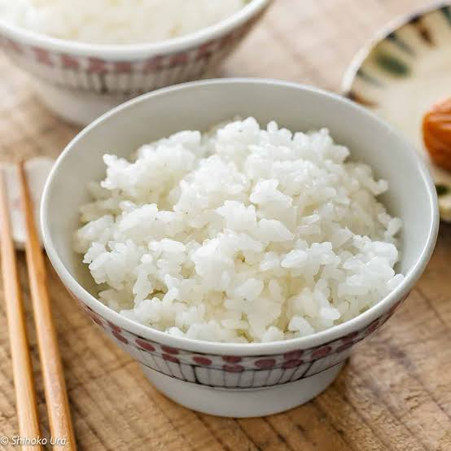

Rice stands as the primary dietary cornerstone for more than half of the world's population, providing a versatile, energy-dense foundation for countless global culinary traditions. From the fragrance of long-grain Basmati and Jasmin varieties to the starch-rich, clingy nature of short-grain Sushi rice and Italian Arborio, this vital cereal grain easily adapts to absorb the rich flavors of whatever it is cooked with.
Across Tanzania and East Africa, it takes center stage as Wali—frequently simmered in rich coconut milk or beautifully layered with aromatic spices, meat, and potatoes to create festive plates of Pilau or Biryani. Whether it is served as a fluffy, minimalist side dish or transformed into a complex, one-pot masterpiece, rice serves as a comforting, universal canvas that unites kitchens across every continent.